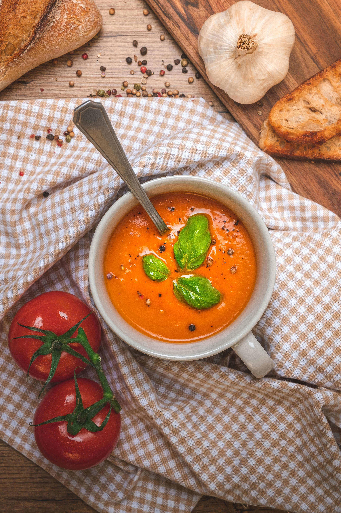

Tomato Soup

Delicious Fresh Tomato Soup
This tomato soup recipe is simple, quick, and perfect to make when tomatoes are ripe
in gardens and farmers' markets for a delicious summertime treat. Delicious with garlic
bread or a grilled cheese sandwich.
Ingredients
- Tomatoes
- Chicken broth
- Garlic
- Onion
- Butter
- Flour
- Sugar
- Salt
Steps
- Boil the tomatoes, onion, garlic, and broth.
- Run the mixture through a food mill into a large bowl.
- Make a roux.
- Add the tomato mixture and season.